I am an African American born in 1997 and raised in Salt Lake City, Utah. I'm currently enrolled in the Rowland Hall high school and I hope to attend college at the University of Utah. I have an autism spectrum disorder known as Asperger Syndrome that assists me, hinders me, and challenges me. Asperger's has brought forth more and more challenges over the years, but as I've learned to adapt myself and better myself, some of them have become assets. For example, Asperger's has let me be extremely passionate for my hobbies and whenever I have the time away from schoolwork, I give them an intense focus. For example, coding has become something I've come to appreciate and enjoy. It's a newfound challenge that I'm ready to tackle.
Hobbies
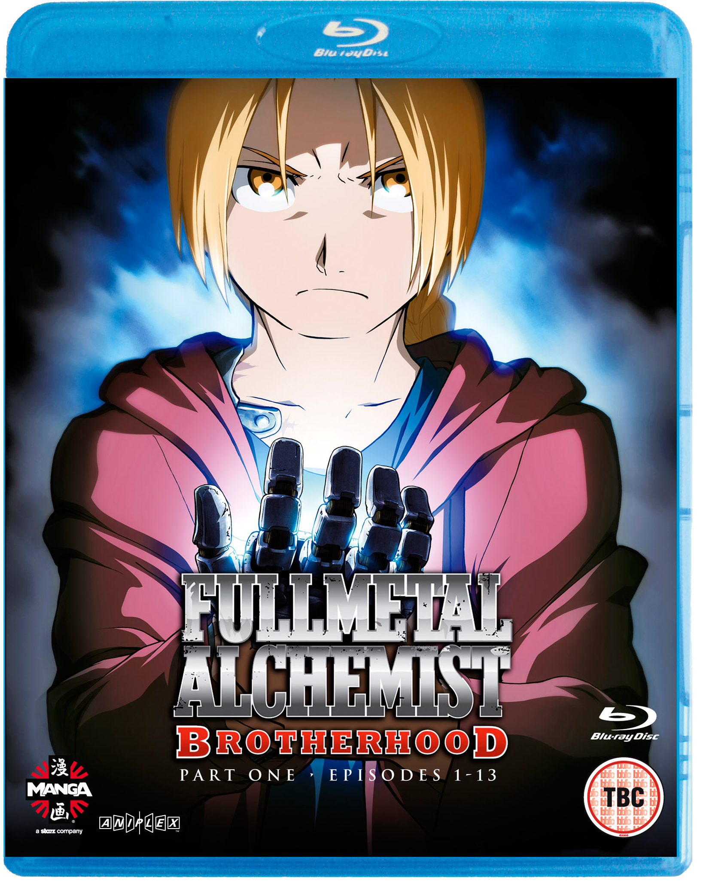
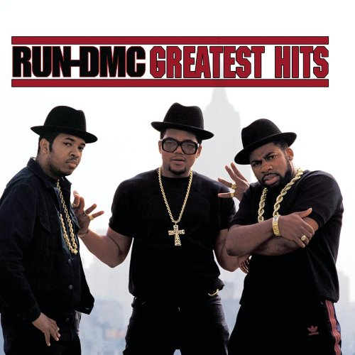
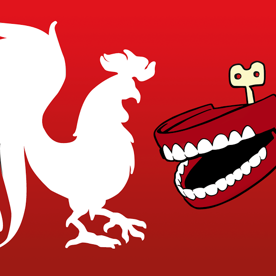
All of my hobbies are heavily founded in the "nerd" community. My main hobbies include anime, video games, music, and a large variety of internet media. I have come to love all of these hobbies thanks to my ubringing in the digital age, a time period that slowly but surely is starting to accept more "nerdy" forms of entertainment and technology. As I've gotten better at coding and have found new means of expanding my coding skill, it has started to become a hobby.
Favorite Anime
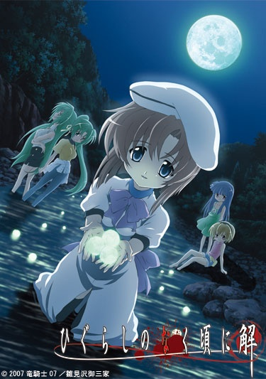
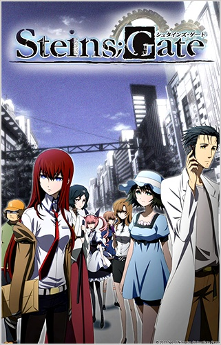
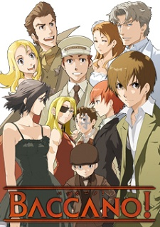
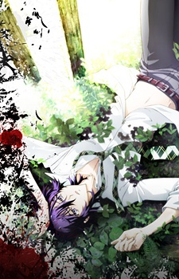
When I was 13 years old, I went to my friend's house for a sleepover. I fell asleep on the living room couch and woke up in the early morning. The TV was still on and the anime Inuyasha was playing, and having little prior knowledge to anime (Japanese animation), I watched it and was amazed. From that day on, I became more enveloped by the anime culture and I've now seen over a hundred different anime series. Some of my favorite include Higurashi no Naku Koro Ni (When the Cicadas Cry), a psychological thriller/ horror series about a series of murders in a small village with an amazing rollercoaster of a story. Another favorite is Steins;Gate, a sci-fi thriller about a group of friends that discover the ability to send messages back in time. Another is Baccano!, an action/ comedy series in the 1930s that follows the chaotic story of several different mob groups and ruffians aboard a transcontinental train. Another great watch was the series Shiki, which is a supernatural thriller about a small village whose citizens slowly die off. The other villagers don't know why but begin to notice that more people are active at night.
Favorite Games
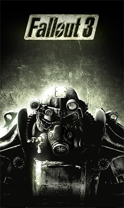
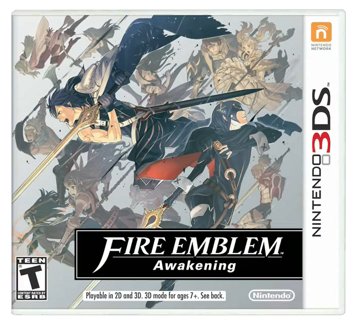
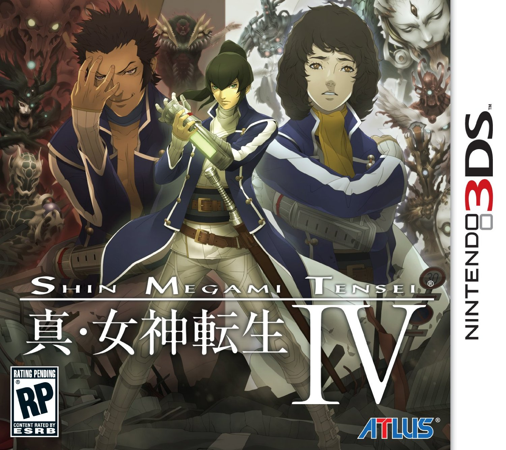
Video games have by far been the most prevelant of my hobbies in my life. I first played Super Mario Bros. 1 and 2 at a day care I went to when I was young, and from then on, I progressively played more and more games. The game series that fully pulled me into the world of video games was Pokemon, a series loved by many. Pokemon Ruby for the Game Boy Advance was the first video game I ever owned. Since then, I've owned multiple gaming systems, including the Nintendo 64, GameCube, Playstation 2, and Xbox 360. I usually played games that were casual Role Playing Games or First Person Shooter games, but once I discovered the Elder Scrolls and Fallout series, I became enthralled by RPGs and they are now my favorite genre of video game. My gaming library now spans many genres, such as RPG, JRPG, Fighting, Strategy, FPS, Open World, and Adventure. My personal favorite game is The Elder Scrolls V: Skyrim, an open world RPG set in a fantasy-like setting with medevial and nordic themes. My favorite series is Fallout, an open world RPG series set in a post-apocalyptic, futuristic, yet 50's themed world. A great series is Fire Emblem, a tactical JRPG series set in fantasy-like settings with heavy Japanese and European influence. The Megami Tensei series is classic JRPG series focused on different mythological beings from many cultures. Everything from the Greek goddess Athena to the Japanese Sun goddess Amaterasu to Lucifer himself.
Favorite Music
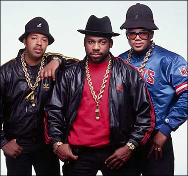
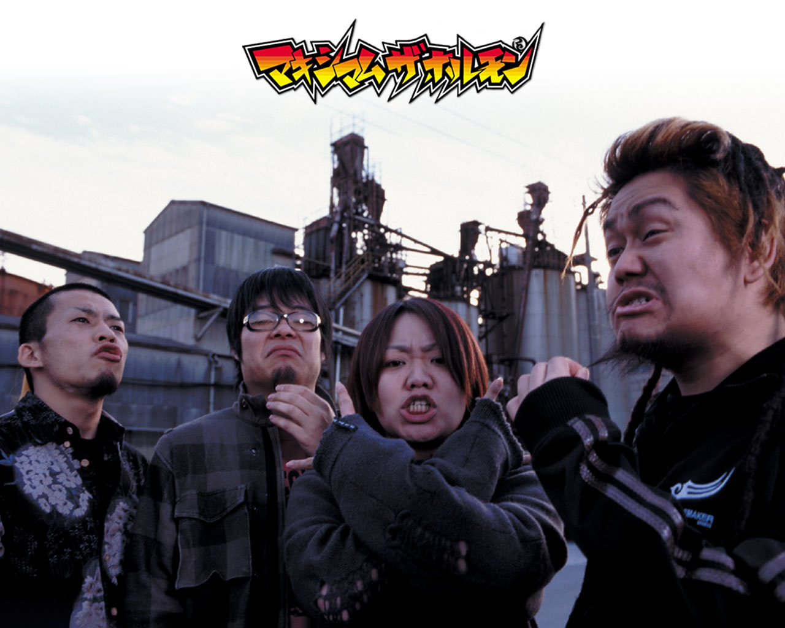
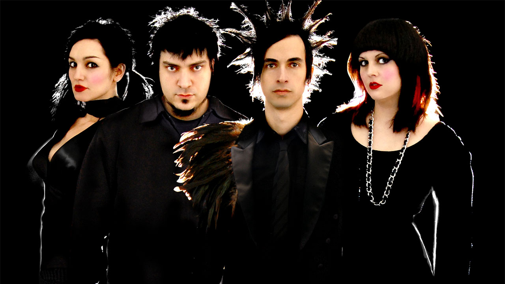
Music plays a huge part in my life as it allows me to relax when stressed by school and I listen to it casually to keep me cheerful and content. Because my father loves mostly rock and metal, and my brother loves rap and hip hop, I've had a great amount of exposure to both. My music library has grown greatly and I have over 60 different genres of music on my library. Some of my favorite music artists include Run-D.M.C., Maximum the Hormone, Yui Horie, and Mindless Self Indulgence.
Favorite Internet Entertainment
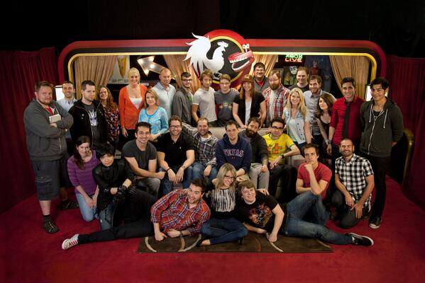
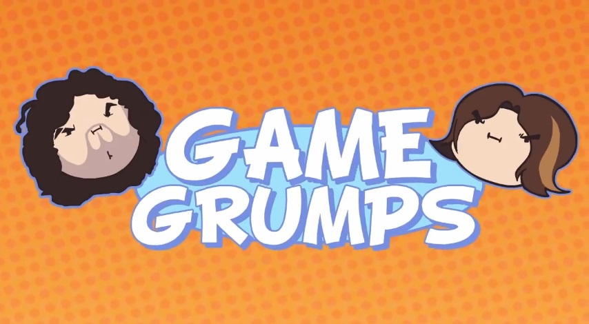
My final hobby can hardly be called a hobby, but it has such a huge impact on me and my generation that I find it hard to not include, the internet. My favorite internet groups are mostly found on Youtube, but several have their own websites as well. Such groups include Rooster Teeth Productions, a production studio founded in Austin, Texas. They make machinima, films created with video game engines. They are mostly known for their web series, Red vs. Blue, made in the video game series Halo, it is the internet's longest running web series. They are also known for making animated shorts, live-action shorts, and the anime-influenced series RWBY. They have an award winning comedy podcast, the Rooster Teeth Podcast, and a gaming podcast, The Patch. They have branched out and have several YouTube channels devoted to other content, most noticeably their Let's Play channel devoted to their sub-studio, Achievement Hunter. Achievement Hunter focuses on guides for completing video games and their achievements/ trophies, and they also create "let's plays". Let's plays are recordings of video games with often times comedic usually live commentary over them. Another group is Mega64, a group of friends that started making comedy skits focused on video games for public-access television. The original cast consists of Rocco Botte, Derrick Acosta, and Shawn Chatfield. As they progressed from public-access to the internet, their special effects and makeup artist Garrett Hunter became the unofficial 4th member of the group. Their comedy and style of humor is almost always very satirical and ironic in nature, which is easily seen in their skits and podcast. They are well known for their public video game experiments, where they act out video games in real life and see how people react. Another favorite group of people is the Game Grumps, originally a collaboration of animator Arin "Egoraptor" Hanson, and comedic game critic Jon "Jontron", Jafari. They created let's plays and were popular thanks to their clash of personalities as "Grump" and "Not So Grump" along with their editor Barry "Razzbarry" Kramer. In June 2013, Jon left the show to focus more on his own personal channel. Leigh Daniel "Danny Sexbang" Avidan of the comedy band Ninja Sex Party took his place as "Not So Grump". He and animator Ross "RubberNinja" O'Donovan are also a part of a side show called "Steam Train" where they play games for PC. They have another side series called "Table Flip", a series by Arin's wife/ animator Suzy "Mortem3r" Hanson and editor Barry Kramer.
 I am an African American born in 1997 and raised in Salt Lake City, Utah. I'm currently enrolled in the Rowland Hall high school and I hope to attend college at the University of Utah. I have an autism spectrum disorder known as Asperger Syndrome that assists me, hinders me, and challenges me. Asperger's has brought forth more and more challenges over the years, but as I've learned to adapt myself and better myself, some of them have become assets. For example, Asperger's has let me be extremely passionate for my hobbies and whenever I have the time away from schoolwork, I give them an intense focus. For example, coding has become something I've come to appreciate and enjoy. It's a newfound challenge that I'm ready to tackle.
I am an African American born in 1997 and raised in Salt Lake City, Utah. I'm currently enrolled in the Rowland Hall high school and I hope to attend college at the University of Utah. I have an autism spectrum disorder known as Asperger Syndrome that assists me, hinders me, and challenges me. Asperger's has brought forth more and more challenges over the years, but as I've learned to adapt myself and better myself, some of them have become assets. For example, Asperger's has let me be extremely passionate for my hobbies and whenever I have the time away from schoolwork, I give them an intense focus. For example, coding has become something I've come to appreciate and enjoy. It's a newfound challenge that I'm ready to tackle. 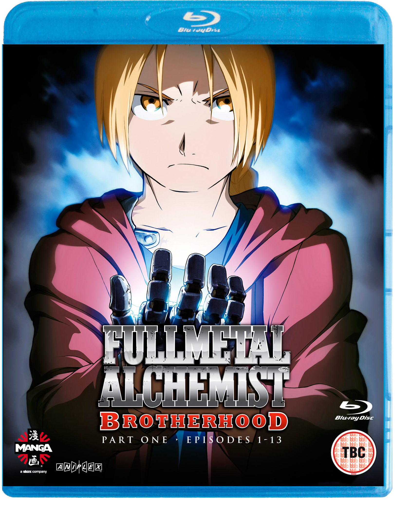
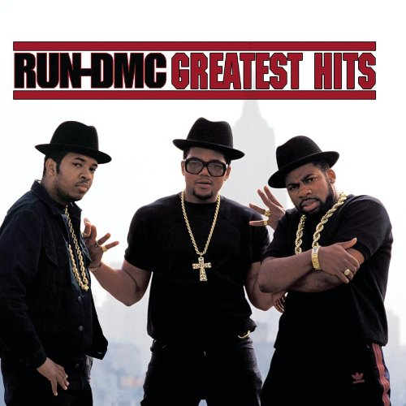
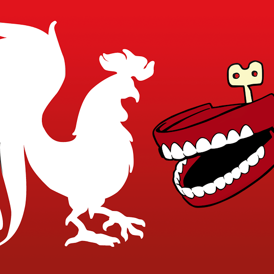
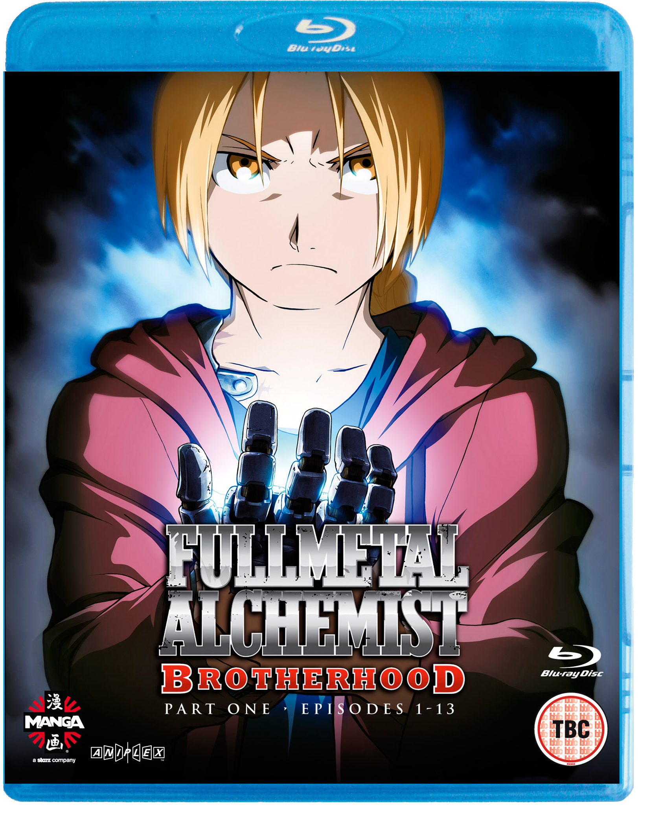
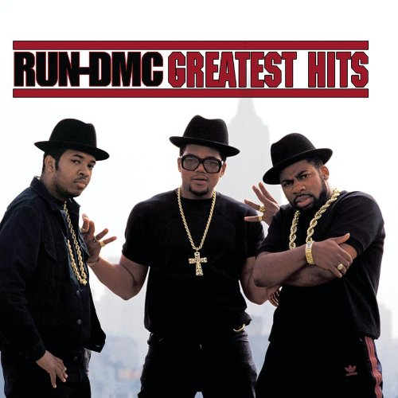
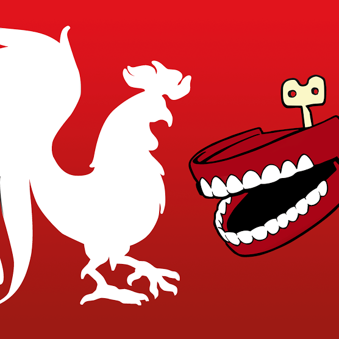
 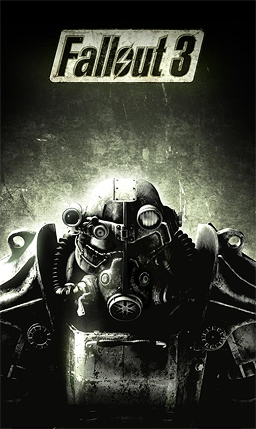
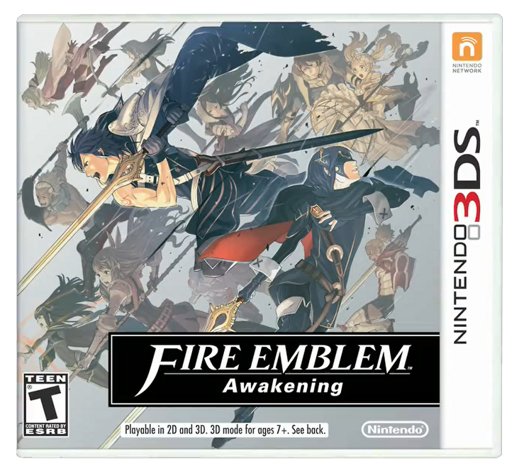
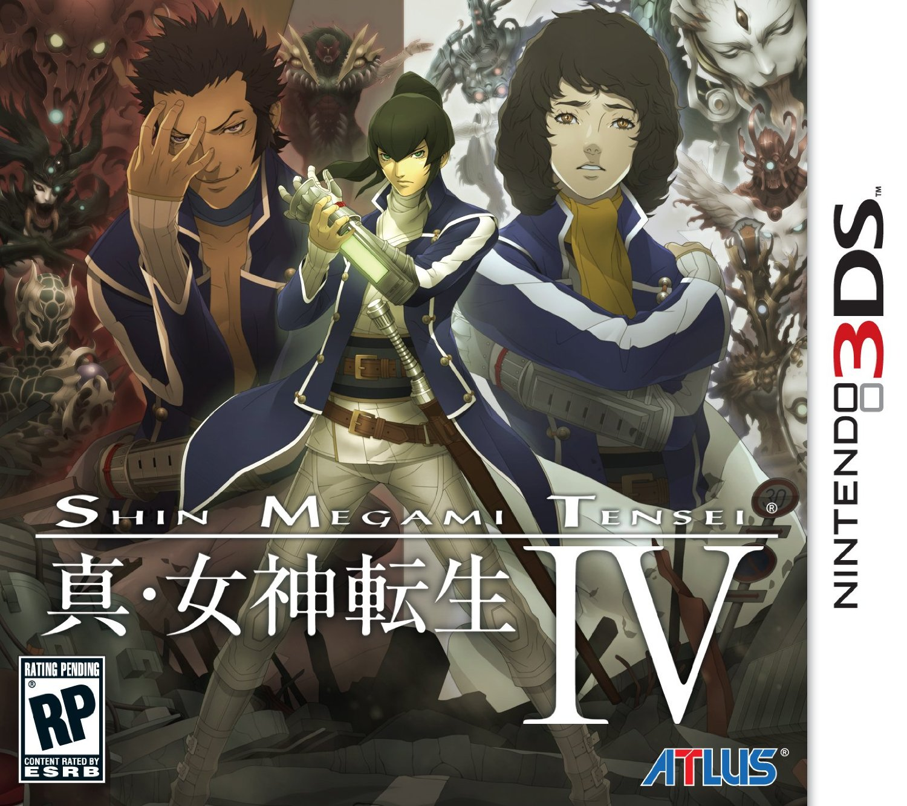
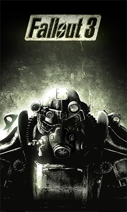
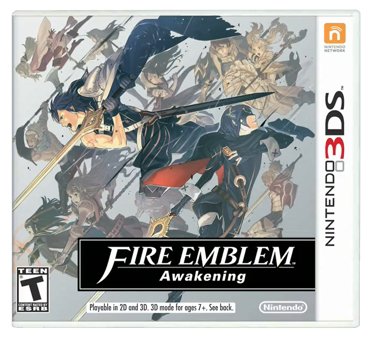
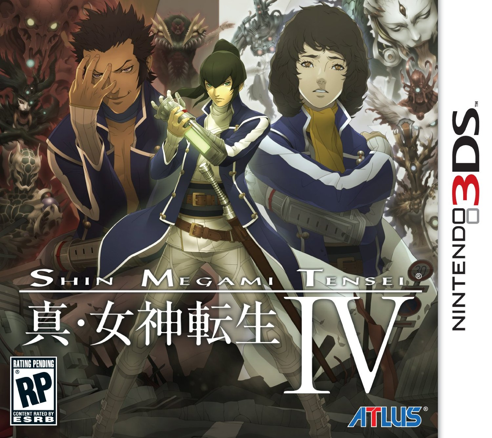